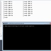
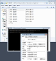
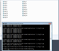

上次弄一个相册，需要修改大量的文件名，全部修改为类似“small_1”、“big_2”这样的形式，就临时去看了看批处理一点教程（ps：命令行中任意命令后加“ /?”是该命令的详情）。自己捣鼓出了点简单的批处理，就在这里做个备忘吧。
与其说简单，不如说简陋。。。详情如下：
将所有待处理文件放在一个文件夹里，在该文件夹下点击“shift + 右键”，弹出菜单中选择“在此处打开命令窗口”。如下图：

将他们全部转换为“不同于目标格式”的“格式”文件，例如，如果你想由“qwer.jpg"转到"big_1.jpg"，那你就随便转成什么格式，例如.j吧：
ren *.* *.j

然后再将这些 .j 文件转换成你想要的格式：
for /l这里是L的小写，后面的才是两个一 %i in (1, 1, 17这里是文件总数) do ren *.j big_%i.jpg

虽然及其简陋低效，但总算完成任务了（doge脸）。